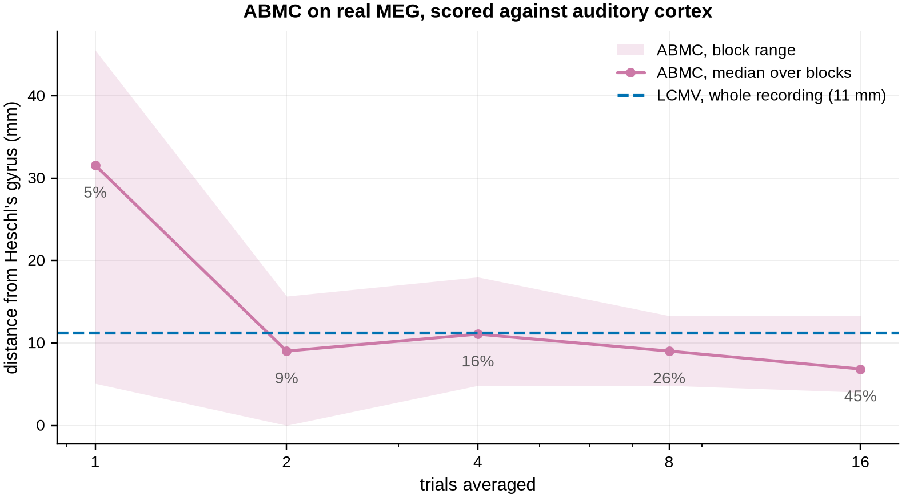
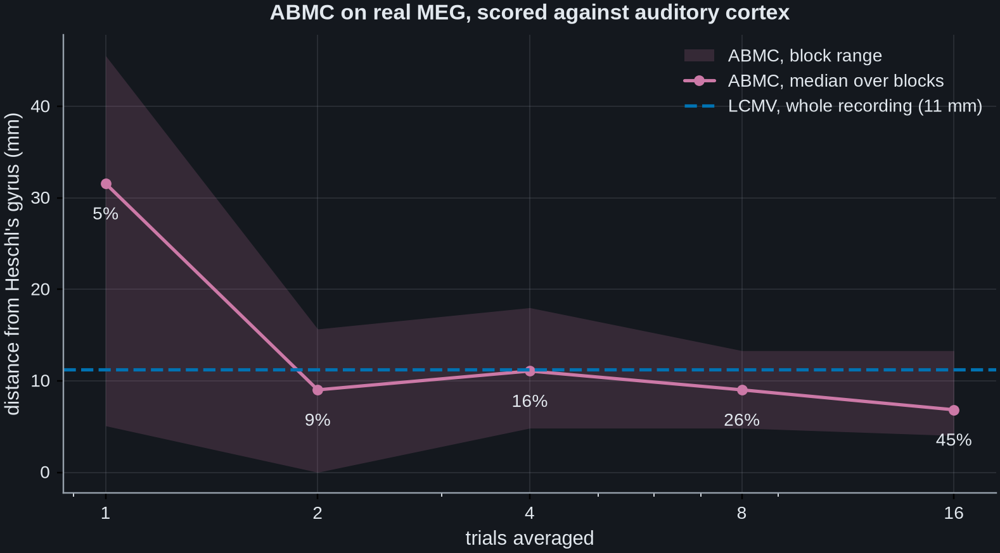

Note
Go to the end to download the full example code.
ABMC on a real recording, and where it stops#
Every other ABMC demonstration in this package is a simulation, which is a fair
criticism of it: simulations are where a method is guaranteed to meet its own
assumptions. This example runs ABMC [1] on real MEG, the
auditory response of the MNE sample dataset, and reports the result whether
or not it flatters the method.
The paper’s own cases are epileptic spikes and delayed responses to single-pulse
stimulation. The sample dataset has neither, but a single-trial auditory
evoked response is the same shape of problem: a short transient with a
reproducible morphology, known from the average, carrying a small share of the
trial’s variance. That is the regime ABMC exists for.
There is no ground truth on real data, so “correct” has to be defined in advance
rather than judged by eye. Here it is anatomical: the primary auditory cortex is
the transverse temporal (Heschl’s) gyrus, and both methods are scored by the
distance from their peak to the nearest grid point inside that label. The
comparison is against mne.beamformer.make_lcmv() on the same data.
The summary, which the numbers below reproduce. On a single trial ABMC is worse than LCMV and wildly variable: a median of 32 mm across eight disjoint trials, ranging from 5 to 46 mm, against 11 mm for LCMV. From two trials upwards its median is never worse than LCMV’s, but it is not uniformly better either: 9 mm at two trials, 11 mm at four, 9 mm at eight and 7 mm at sixteen. The four-trial point is the one to be careful with, because it sits on the LCMV line rather than below it. The spread narrows sharply between one trial and two – the block range goes from 40.4 mm wide to 15.7 – and after that only slowly, and not monotonically: 13.2 mm at four trials, 8.5 at eight and 9.3 at sixteen. So the method works here, but not at the signal-to-noise of one trial of this recording.
Read the comparison knowing it is deliberately unfair to ABMC. LCMV is given the whole recording, all 72 epochs, while ABMC is given between one and sixteen trials, and ABMC still matches or beats it from two trials up. The asymmetry is not hidden in the legend: it is drawn there. ABMC is not given only its own trials either, and that cuts the other way: its template and noise covariance both come from all 72 epochs, and only the segment being localised is short.
# Authors: Sepehr Shirani <sepehrshirani@gmail.com>, <s.shirani@ucl.ac.uk>
# Muzhi Wang <muzhi.wang@ucl.ac.uk>
# Jade Serfaty <jade.serfaty.17@ucl.ac.uk>
# License: BSD-3-Clause
import matplotlib.pyplot as plt
import mne
import numpy as np
from mne.beamformer import apply_lcmv_cov, make_lcmv
from advance_beamlab import make_abmc
data_path = mne.datasets.sample.data_path()
subjects_dir = data_path / "subjects"
meg_dir = data_path / "MEG" / "sample"
Gradiometers only, so the comparison is single-unit and needs no cross-type whitening argument to be made here; that is covered in the MCMV auditory example. The 2 Hz high-pass removes the drift that would otherwise dominate a single trial’s variance.
raw = mne.io.read_raw_fif(meg_dir / "sample_audvis_filt-0-40_raw.fif", preload=True)
raw.pick("grad").filter(2, 40)
events = mne.read_events(meg_dir / "sample_audvis_filt-0-40_raw-eve.fif")
epochs = mne.Epochs(
raw, events, {"aud_l": 1}, tmin=-0.2, tmax=0.5, baseline=(None, 0), preload=True
)
evoked = epochs.average()
fwd = mne.read_forward_solution(meg_dir / "sample_audvis-meg-oct-6-fwd.fif")
fwd = mne.convert_forward_solution(fwd, force_fixed=True, use_cps=True)
fwd = mne.pick_channels_forward(fwd, epochs.ch_names, ordered=True)
source_rr = fwd["source_rr"]
The scoring target, fixed before either method is run: the grid points inside the transverse temporal label of either hemisphere.
labels = [
label
for label in mne.read_labels_from_annot(
"sample", "aparc", subjects_dir=subjects_dir
)
if "transversetemporal" in label.name
]
# Score against the label *surface*, not against the decimated grid points that
# happen to fall inside it. The grid is spaced at roughly 3.4 mm, so scoring
# against the 42 grid points rather than the 1503 label vertices inflates every
# distance by up to 3.5 mm on numbers whose whole range is a centimetre.
auditory_rr = np.vstack(
[
src_hemi["rr"][label.vertices]
for hemi, src_hemi in zip(("lh", "rh"), fwd["src"], strict=True)
for label in labels
if label.hemi == hemi
]
)
def distance_to_auditory(index):
"""Millimetres from a grid point to the nearest point of Heschl's gyrus."""
return np.linalg.norm(auditory_rr - source_rr[index], axis=1).min() * 1000
print(f"label vertices defining Heschl's gyrus: {len(auditory_rr)}")
label vertices defining Heschl's gyrus: 1503
The template is the dominant temporal component of the average, which is what an experimenter actually has: a prototype of the waveform, not a copy of the trial being localised.
noise_cov = mne.compute_covariance(epochs, tmax=0.0, method="shrunk")
data_cov = mne.compute_covariance(epochs, tmin=0.0, method="shrunk")
_, _, vt = np.linalg.svd(evoked.data, full_matrices=False)
template = vt[0] / np.abs(vt[0]).max()
filters = make_lcmv(
epochs.info,
fwd,
data_cov,
reg=0.05,
noise_cov=noise_cov,
weight_norm="unit-noise-gain",
)
lcmv_peak = int(np.argmax(apply_lcmv_cov(data_cov, filters).data.ravel()))
lcmv_error = distance_to_auditory(lcmv_peak)
print(f"LCMV peak: {lcmv_error:.0f} mm from Heschl's gyrus")
LCMV peak: 11 mm from Heschl's gyrus
Now ABMC, over a sweep of how many trials are averaged. Averaging raises the signal-to-noise ratio and at the same time raises the share of the variance the response carries, so the sweep walks the recording out of the regime ABMC is designed for while making the problem easier.
Every level is scored on several disjoint blocks of trials rather than on the first block alone. That is not fussiness. Scored on the first single trial this recording gives 5.1 mm, which is the sixth best of the 72 single trials available; the median single trial gives 20 mm, and only 26 per cent of them beat LCMV. A single block would have reported a number six times better than the eight-block median below.
trials = epochs.get_data()
n_blocks = 8
rows = []
for n_avg in (1, 2, 4, 8, 16):
usable = min(n_blocks, len(trials) // n_avg)
errors, shares = [], []
for b in range(usable):
segment = trials[b * n_avg : (b + 1) * n_avg].mean(0)
shares.append(np.var(evoked.data) / np.var(segment))
result = make_abmc(
epochs.info, fwd, segment, template, noise_cov=noise_cov, P="auto"
)
errors.append(
distance_to_auditory(int(np.argmax(np.abs(result.template_match))))
)
errors = np.array(errors)
rows.append(
(n_avg, np.mean(shares) * 100, np.median(errors), errors.min(), errors.max())
)
print(
f" n_avg={n_avg:2d} ({usable} blocks) variance share "
f"{np.mean(shares) * 100:5.1f}% ABMC median {np.median(errors):5.1f} mm "
f"[{errors.min():.1f}, {errors.max():.1f}]"
)
<decorator-gen-350>:12: RuntimeWarning: SBL covariance did not converge in 100 iterations (relative cost change above tol=1e-05); returning current estimate.
n_avg= 1 (8 blocks) variance share 4.7% ABMC median 31.6 mm [5.1, 45.5]
n_avg= 2 (8 blocks) variance share 8.7% ABMC median 9.0 mm [0.0, 15.7]
n_avg= 4 (8 blocks) variance share 15.7% ABMC median 11.1 mm [4.8, 18.0]
n_avg= 8 (8 blocks) variance share 26.1% ABMC median 9.0 mm [4.8, 13.3]
n_avg=16 (4 blocks) variance share 45.1% ABMC median 6.8 mm [4.0, 13.3]
The single-trial point is the one to look at hardest, because it is the regime the method is aimed at and it is where the method loses. Its median is 32 mm against LCMV’s 11, and its range runs from 5 mm to 46 mm, so a single trial of this recording decides almost nothing. From two trials up the medians are 9.0, 11.1, 9.0 and 6.8 mm against LCMV’s 11.2, which is a clear win at two, eight and sixteen trials and a tie at four. Four trials is not a dip in the method so much as a reminder of how little separates these numbers: eight blocks of a 72-epoch recording, on a grid spaced at 3.4 mm.
This is also why the sweep is scored on eight disjoint blocks rather than on the first one. Scored on the first single trial alone the answer is 5.1 mm, which would have read as ABMC beating LCMV by a factor of two at the hardest setting. That trial is the sixth best of the 72 available.
One further result is worth singling out because it was different a day
earlier. Before the automatic selection of P was made to reject values
above critical_p, this recording gave 53 mm at a single trial: the plateau
rule had settled on the degenerate large-P limit, which is a fixed point
and so looks perfectly stable while localising badly. critical_p runs
between 1.2 and 1.5 over the blocks of this sweep, about 1.4 at a single
trial, so that constraint does real work on this dataset rather than guarding
a case that never arises.
n_avg, shares, errors, lo, hi = map(np.array, zip(*rows, strict=True))
# Colours follow the convention the other ABMC example sets: C0 is the
# established method, C3 the one being introduced.
fig, ax = plt.subplots(figsize=(7.2, 4), constrained_layout=True)
ax.fill_between(n_avg, lo, hi, color="C3", alpha=0.18, lw=0, label="ABMC, block range")
ax.plot(n_avg, errors, "o-", color="C3", label="ABMC, median over blocks")
ax.axhline(
lcmv_error,
color="C0",
ls="--",
label=f"LCMV, whole recording ({lcmv_error:.0f} mm)",
)
ax.set(
xlabel="trials averaged",
ylabel="distance from Heschl's gyrus (mm)",
xscale="log",
title="ABMC on real MEG, scored against auditory cortex",
)
ax.set_xticks(n_avg)
ax.set_xticklabels(n_avg)
for x, y, s in zip(n_avg, errors, shares, strict=True):
ax.annotate(
f"{s:.0f}%",
(x, y),
textcoords="offset points",
# Below the marker, not above it. The LCMV reference sits at about
# 11 mm and the ABMC medians from two trials on run between 7 and 11,
# the four-trial one landing on the reference itself, so a label eight
# points above a marker landed on the line and was struck through by it.
xytext=(0, -12),
ha="center",
va="top",
fontsize=9,
color="0.35",
)
ax.legend()


<matplotlib.legend.Legend object at 0x7f68b0f1af00>
The percentages annotated on the points are the share of the segment’s variance carried by the evoked response. Even the single-trial point, at about 5 per cent, sits above the 0.14 to 1.05 per cent the simulation example works at, so this recording never reaches the low-variance regime the method is really aimed at. No dataset shipped with MNE-Python would: none of them contain epileptiform spikes. The simulation remains the place where ABMC is tested against a known answer. This example is the place where it meets a real recording, and the useful thing it establishes is the boundary: two trials of this data, not one.
References#
Total running time of the script: (8 minutes 58.830 seconds)